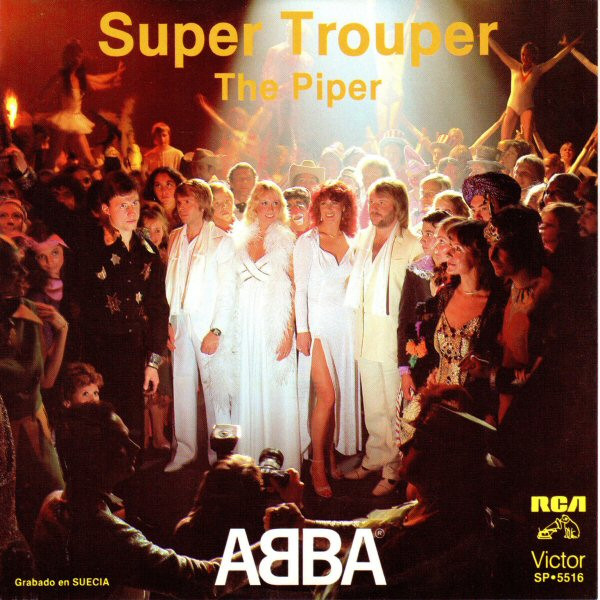
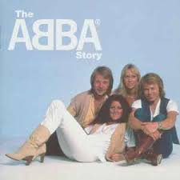

Multimedia utilizada:
- 
- 
En esta sección encontrarás la información relativa al origen de los recursos utilizados.
| Contenido | Propietario | Link |
|---|---|---|
| Portadas de los discos | Discogs | https://www.discogs.com |
| Logo de la página | Alamy | https://www.alamy.es/imagenes/word-abba-concept-theme-written.html?cutout=1&sortBy=relevant |
| El texto es de ChatGPT | ChatGPT (OpenAI) | https://chat.openai.com |